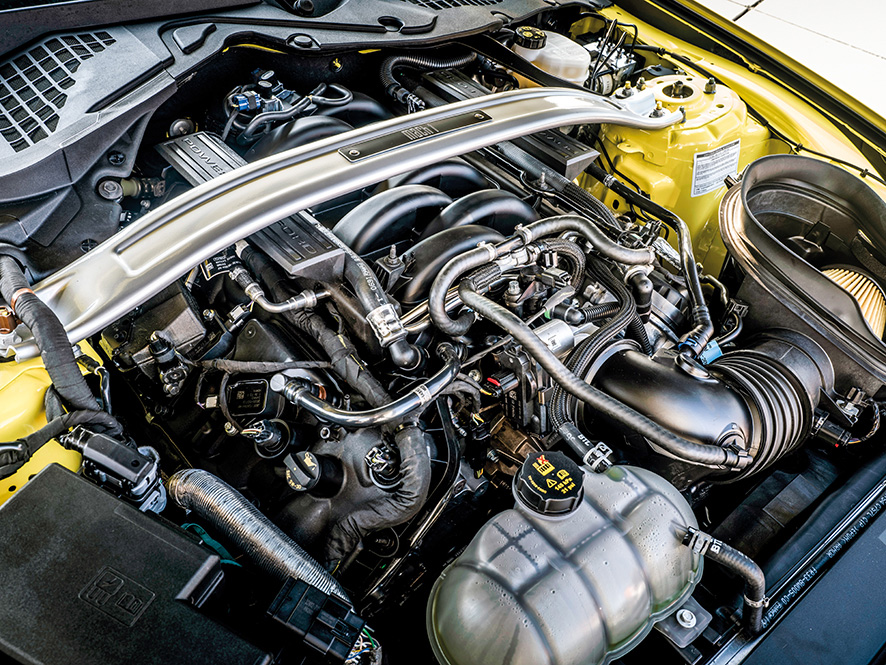
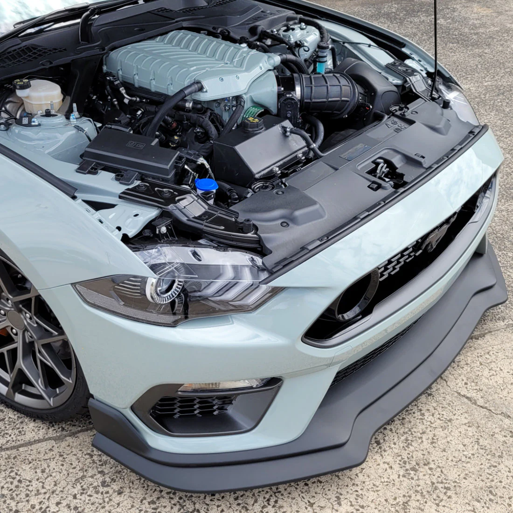

The Building Blocks of the Mustang Mach 1

Key Specifications:
- Engine: 5.0L Ti-VCT V8
- Displacement: 5,038 cc
- Horsepower: 480 hp @ 7,000 rpm
- Torque: 420 lb.-ft. @ 4,600 rpm
- Compression Ratio: 12.0:1
- Redline: 7,500 RPM
- Transmission: TREMEC® 6-speed manual or 10-speed automatic
Premium Interior Features
- 12.3-inch digital instrument cluster
- SYNC 4 infotainment system
- Track Apps with performance metrics
- Leather-trimmed sport seats
- Mach 1 exclusive aluminum instrument panel
- Push-button start
- Dual-zone automatic climate control
Performance Enhancements

- Unique Mach 1 active exhaust system
- MagneRide® damping system
- Brembo™ six-piston front brake calipers
- TORSEN® limited-slip differential
- Unique Mach 1 aerodynamic components
- Track-focused cooling system
- If you're a car enthusiast like me, and want to know what kind of exhaust and performance you can get out of this car after some modifications, check out this video:
- MUSTANG TAKE OFF